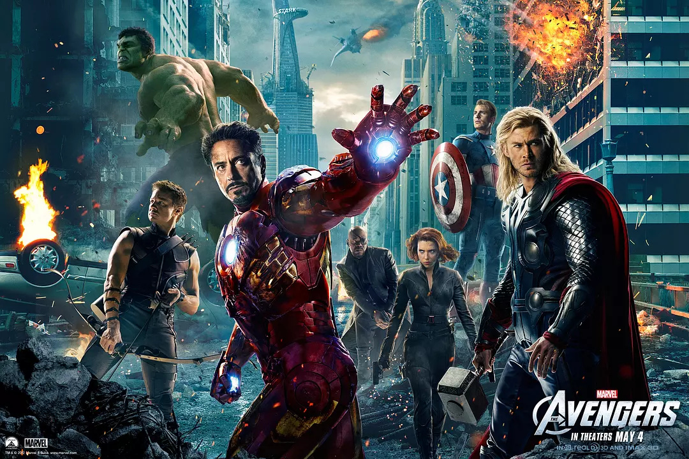

漫威电影
复仇者联盟
一股突如其来的强大邪恶势力对地球造成致命威胁，没有任何一个超级英雄能够单独抵挡。长期致力于保护全球安危的神盾局（SHIELD）感到措手不及，其指挥官“独眼侠”尼克·弗瑞（塞缪尔·杰克逊 Samuel L. Jackson 饰）意识到他必须创建一个“史上最强”的联盟组织， 云集各方超级英雄一起发威，才能拯救世界于水深火热，抵御黑暗势力的侵袭。于是由六大超级英雄——“钢铁侠”（小罗伯特·唐尼 Robert Downey Jr. 饰）、“雷神” （克里斯·海姆斯沃斯 Chris Hemsworth 饰）、“美国队长”（克里斯·埃文斯 Chris Evans 饰）、“绿巨人” （马克·鲁弗洛 Mark Ruffalo 饰）、“黑寡妇”（斯嘉丽·约翰逊 Scarlett Johansson 饰）和“鹰眼”（杰瑞米·雷纳 Jeremy Renner 饰）组成的 “复仇者联盟”应运而生。他们各显神通，团结一心，终于战胜了邪恶势力，保证了地球的安全。
豆瓣评分：
优酷评分：
土豆评分：